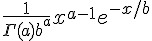
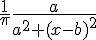
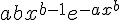
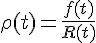
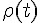
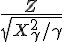
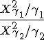

機率分布 (連續型)
簡介
| 連續機率模型 | 密度函數 | R 函數 | 說明 |
|---|---|---|---|
| 常態分布(Normal) |  |
norm(mean, sd) | 中央極限定理：x1+x2+...+xk; 當 k 越大就越接近常態分布 |
| 伽瑪分布 (Gamma) |  | gamma(shape, rate = 1, scale = 1/rate) |  指數分布與卡方分布都是 Gamma 分布的特例 |
| 指數分布 (Exponential) |  |
exp(rate) | 伽瑪分布(  ) ) 布瓦松過程中，第一次事件出現的時間 W |
| 卡方分布 (Chi-Square) |  |
chisq(df, ncp) | 伽瑪分布(  ) ) 利用樣本推斷母體變異數 |
| 均勻分布 (Uniform) |  |
unif(a:min, b:max) | a:範圍下限, b: 上限 出現機會均等 |
| 柯西分布 (Cauchy) |  | cauchy(b:location, a:scale) | |
| 威布爾分布 (Weibull) |  | weibull(a:shape, b:scale) |  可靠度工程：f(x) 失敗時間, R(t) 可靠度,  失敗率 |
| T 分布 (T) |  | t(df, ncp) | 估計變異數時使用的分布 |
| F 分布 (F) |  | f(df1, df2, ncp) | 等變異數 F 檢定時使用 |
| 貝塔分布 (Beta) |  |
beta(a:shape1, b:shape2, ncp) | |
| 對數常態分布 (Log Normal) | lnorm(meanlog, sdlog) | ||
| 邏輯分布 | logis(location, scale) | ||
| Signrank | signrank(n) | ||
| 威爾斯 | wilcox(m, n) | a,b 為兩組樣本 |